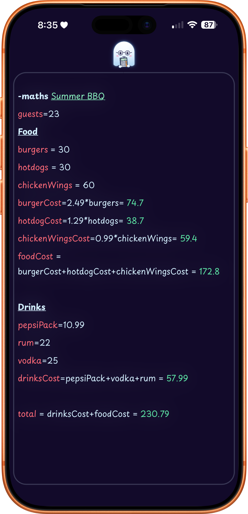
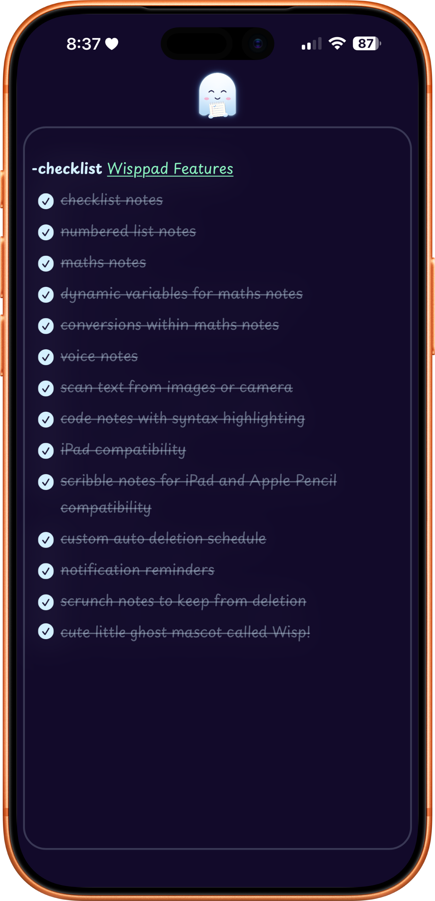
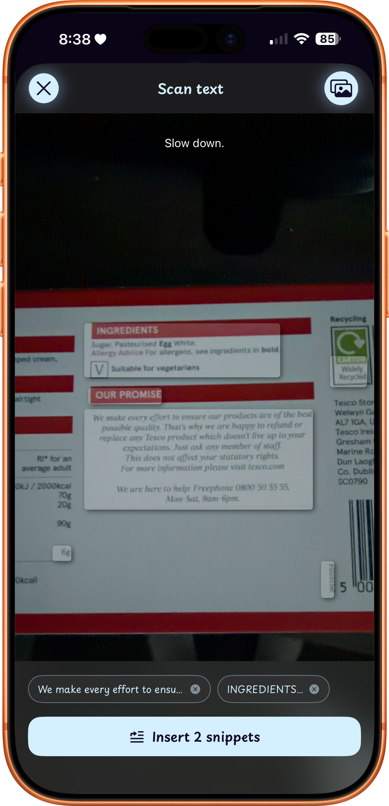
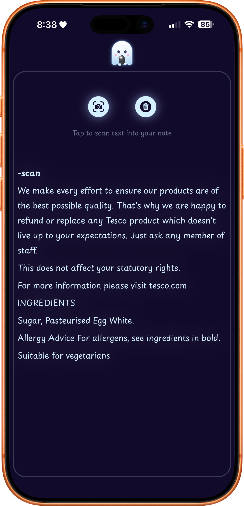
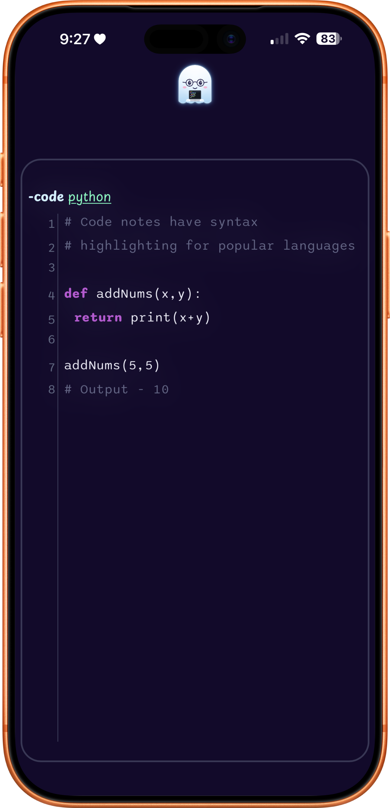
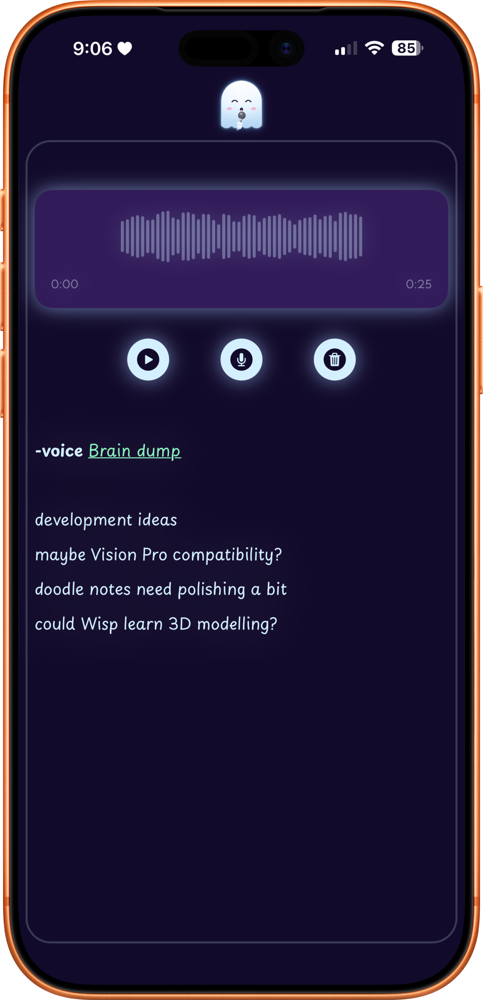
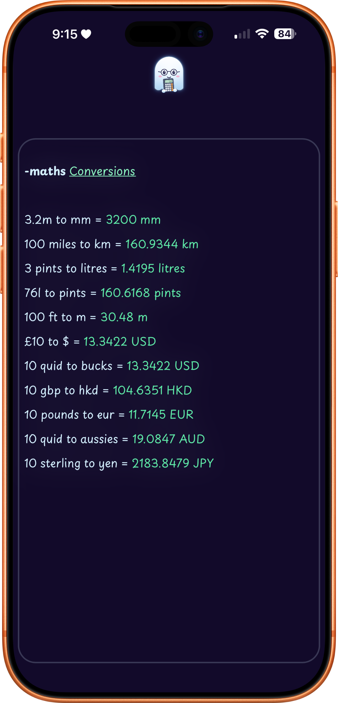
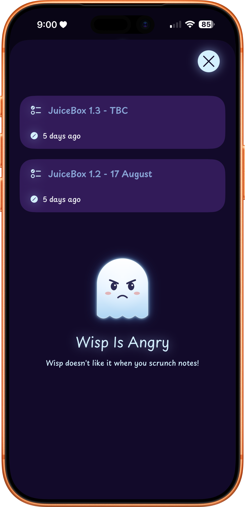
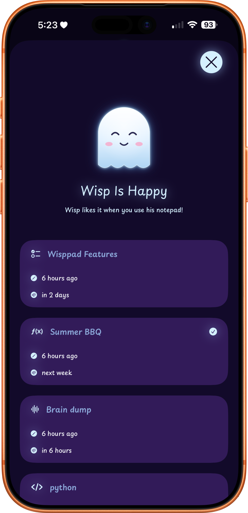

Wisppad
Wisp is your new note taking companion. His Wisppad will help you manage your notes by keeping them short, useful and remind you about them before he "wisps" them away to prevent clutter.
Wisp is your new note taking companion. His Wisppad will help you manage your notes by keeping them short, useful and remind you about them before he "wisps" them away to prevent clutter.
Designed around the idea of impermanence. Notes fade out and wisp away after their time is up.
Type expressions and get instant results, perfect for quick calculations on the go.
Convert units of measurement, distance, volume and currency all in the same maths note.
Store syntax-highlighted code snippets with support for multiple languages.
Record quick voice memos without leaving the app or switching contexts.
Create simple checklists or numbered lists for quick task tracking.
Create numbered lists for order and sequential tasks. Indentation to show hierarchy and sublevel tasks.
Scan text with your camera or from an image saved on your device.
Write naturally with your finger or better with Apple Pencil.
Add photos and videos and write your notes along side them.
Set a default time for notes to delete automatically. Notes reset their timer when edited.
Get Wisp to remind you before he wisps away your notes.
Scrunch a note with two fingers to keep it indefinitely, though Wisp won't be happy.
Quick and easy access to note types, text formatting and note specific inputs.
Swipe left or right for easy note navigation. Swipe down to view scrunched notes.
Watch notes fade out and disappear in a puff of smoke when their time runs out.
Notes sync privately across all your devices through your iCloud account.
Keep your notes secured by using a passcode to enter Wisppad. Use FaceID or TouchID for extra security.
Choose from several popular IDE themes for code syntax highlighting.








